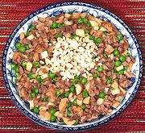

|
Diced DuckChina - App Kop Ting | ||||
| Serves: Effort: Sched: DoAhead: |
3 main *** 40 min Part |
A good recipe for duck meat without a lot of fat. This recipe is said to also work well with pigeon (squab), but that'll set you back about 8 times what duck costs. | |||
|
12 4 3 6 1 1/8 1 ------ 1/2 2 2 2/3 1/2 ------ 3 2 ------ 1/4 |
oz oz oz oz c in cl --- t t T c t --- T T --- c |
Duck Meat (1) Bamboo Shoots Water Chestnuts (2) Button mushroom (3) Green Peas (4) Ginger Garlic -- Sauce Sugar Cornstarch Oyster Sauce Stock (5) Salt ------------ Duck Fat (6) Rice Wine -- Garnish Nuts, crushed (7) |
Prep - (25 min)
|